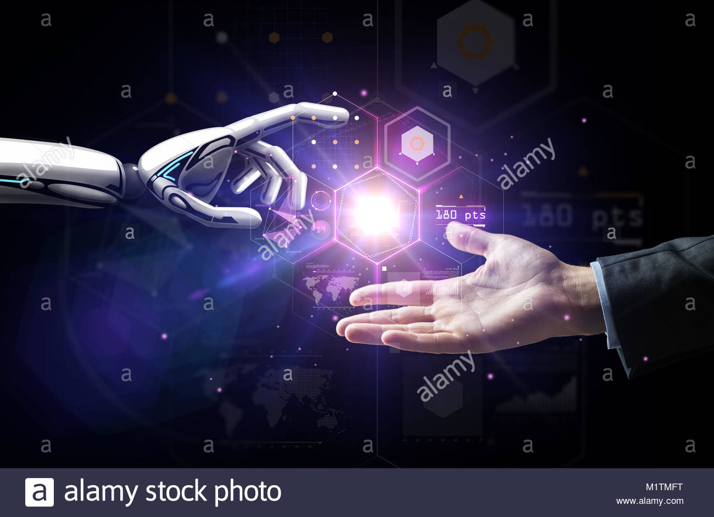

Future of Artificial Intelligence
A lot of visionaries like Stephen Hawking, Steve Wozniak, Elon Musk and others have predicted that AI could be dangerous because if machines started thinking better than humans, then where would humans be?
Scared? We have the power to diffuse what we have created. What we need to know is where to draw the line.
It’s overwhelming and exciting – but definitely not scary. In this article, we will discuss some compelling opportunities in the field of AI that were unthinkable in the past.
Mr. Sundar Pichai, the CEO of Google once said that everything in Google is going to be AI centered which could mean that AI will create numerous job opportunities that will require creativity, critical thinking skills and much more.
Artificial intelligence is impacting the future of virtually every industry and every human being. Artificial intelligence has acted as the main driver of emerging technologies like big data, robotics and IoT, and it will continue to act as a technological innovator for the foreseeable future.
Employing machine learning and computer vision for detection and classification of various “safety events,” the shoebox-sized device doesn’t see all, but it sees plenty. Like which way the driver is looking as he operates the vehicle, how fast he’s driving, where he’s driving, locations of the people around him and how other forklift operators are maneuvering their vehicles. IFM’s software automatically detects safety violations (for example, cell phone use) and notifies warehouse managers so they can take immediate action. The main goals are to prevent accidents and increase efficiency. The mere knowledge that one of IFM’s devices is watching, Gyongyosi claims, has had “a huge effect.”
Machine learning
There has been significant progress in machine learning techniques. Machines can solve real-world problems easily by collecting, analyzing and processing data from various sources. The ultimate aim of machine learning is for the machine to be able to make decisions without human intervention. Machine learning is useful in education, medicine, search engine results, digital marketing, etc... this branch of AI has a great scope as companies rely heavily on machine learning to improve user experience.

Robotics
This is the most promising area of AI which will make big strides in the future. Robotic engineers are constantly thinking of ways to create robots who behave like humans, interact like humans and think like humans. The future generation of engineers or today’s young minds are much interested in robotics from as early as 6-7 years and are already learning the basics of robotics. Robotics has the power to transform our future in more than one way –
Education – Humanoid robots are helping students learn at their own pace and make learning personalized.
Home – Robots connected with the cloud are able to follow instructions and run the washing machine for us, do simple cooking tasks like frying, baking, prepare the dinner table and turn on the fan for us. All these without constant intervention from humans – just a one-time setup.